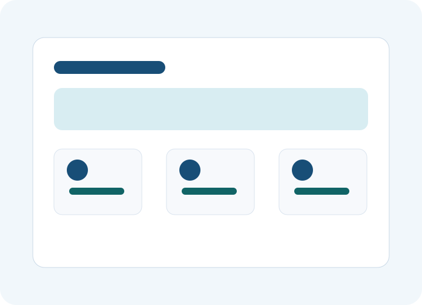

Inspect
Review template pages, CSS, scripts, assets, repository conventions, and Storyblok readiness.
About the agent
HTML-to-Storyblok helps teams inspect a supplied static template, generate an additive manifest, and create isolated Storyblok draft resources for review.
Safety model
Generated files, components, assets, folders, and draft stories are namespaced with the integration ID. Existing production content, routes, dependencies, and Storyblok resources are never modified by the import workflow.

Review template pages, CSS, scripts, assets, repository conventions, and Storyblok readiness.
Create a deterministic manifest with generated component names, asset operations, and draft story content.
Run a dry run first, then create only integration-owned Storyblok resources and isolated repository files.